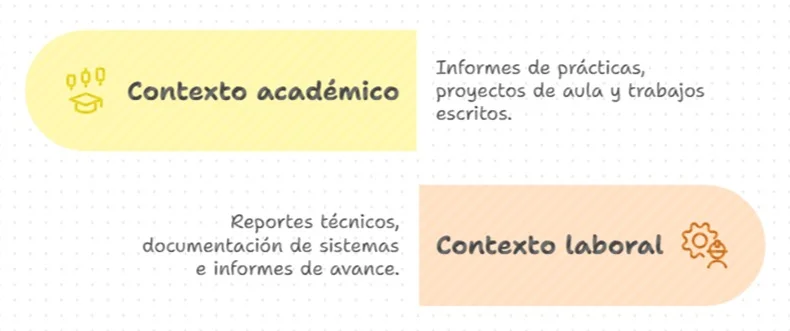
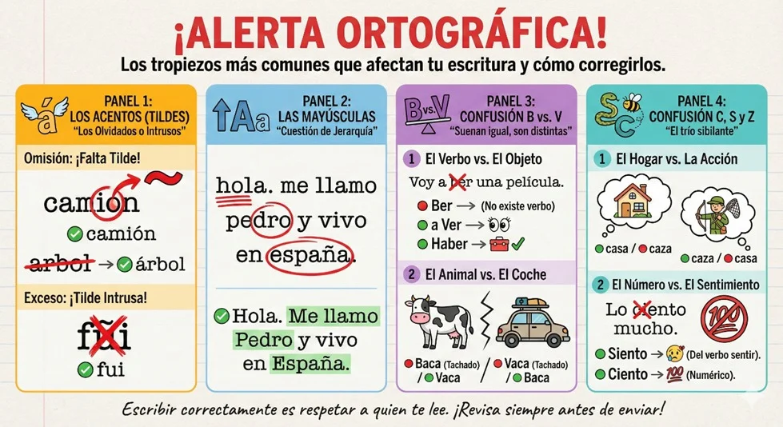

Introducción
En el ámbito académico y profesional, un texto no se considera finalizado hasta que ha pasado por un proceso riguroso de revisión y corrección. En el desarrollo de software, esta práctica es especialmente importante, ya que la documentación técnica, los informes y los mensajes escritos deben ser precisos, claros y libres de errores.
Autores como Cassany y Serafini destacan que escribir implica revisar constantemente lo escrito, cuestionar las ideas, reorganizar la información y corregir la forma del texto. De manera similar a la depuración de código, la revisión textual permite detectar fallas y mejorar la calidad del producto final.
Este tema busca que el estudiante adquiera herramientas prácticas para revisar y corregir sus textos, fortaleciendo su desempeño académico y su preparación para el entorno laboral.
Objetivo
- ✓ Desarrollar en el estudiante la capacidad de revisar y corregir textos académicos y técnicos, garantizando claridad, coherencia, corrección gramatical y adecuación al contexto del desarrollo de software.
Contenido
La revisión y corrección como parte del proceso de escritura.
La escritura es un proceso compuesto por varias etapas: planificación, redacción, revisión y corrección. Revisar un texto implica analizarlo críticamente para mejorar su contenido y su forma.
En el desarrollo de software, esta etapa es comparable a la prueba y depuración de un programa: permite identificar errores antes de que el producto sea entregado.
Tipos de revisión
Revisión de contenido
Se centra en el significado del texto y en la organización de las ideas. Permite verificar:
Ejemplo resuelto:
❌ Texto con problemas de contenido:
"El sistema es importante y tiene varias funciones que ayudan al usuario."
✅ Texto mejorado:
"El sistema facilita la gestión de usuarios mediante funciones de registro, consulta y actualización de información."
Explicación: se reemplazan ideas vagas por información específica.
Revisión gramatical y ortográfica
Busca corregir errores relacionados con:
- ✓ Ejemplo resuelto:
❌ "El sofware permite al usuario ingresar datos los cuales son procesados por el sistema"
✅ "El software permite al usuario ingresar datos, los cuales son procesados por el sistema."
- ✓ Revisión de estilo
Se enfoca en mejorar la fluidez, la claridad y la adecuación del lenguaje al contexto.
Ejemplo:
❌ "En el presente documento se procede a realizar la explicación del desarrollo del sistema."
✅ "Este documento explica el desarrollo del sistema."
Errores frecuentes en la revisión de textos técnicos:
| Tipo de error | Ejemplo | Corrección |
|---|---|---|
| Ortográfico | sofware | software |
| Redundancia | subir para arriba | subir |
| Ambigüedad | cosas importantes | Resumir ideas clave |
| Oraciones extensas | Frases muy largas | Dividir en varias |
Estrategias para una revisión efectiva
Lista de verificación para la revisión
Herramientas de apoyo para la corrección:
Estas herramientas deben utilizarse como apoyo, no como sustituto del criterio del escritor.
Aplicación en contextos académicos y laborales.

Etapas de la corrección de textos
En las etapas esenciales del proceso de corrección de textos, desde la revisión inicial hasta la entrega final. Se detallan los aspectos clave que se deben considerar en cada fase para garantizar la calidad, precisión y claridad del texto. El objetivo es proporcionar una guía práctica para correctores de estilo, editores y cualquier persona involucrada en la producción de contenido escrito.
- ✓ Etapa 1: Revisión global (contenido y coherencia)
¿Qué revisar?
¿El texto cumple su propósito? (informar, argumentar, narrar, etc.)
¿Se entiende la idea principal?
¿El texto tiene coherencia y unidad temática?
Estrategias:
Leer en voz alta.
Subrayar las ideas principales de cada párrafo.
Hacerse preguntas como: ¿Este texto tiene sentido? ¿Responde a lo que se me pidió?
- ✓ Etapa 2: Revisión de la estructura (organización)
¿Qué revisar?
¿Hay una introducción clara, un desarrollo ordenado y una conclusión pertinente?
¿Cada párrafo desarrolla una idea específica?
¿Las ideas están conectadas lógicamente?
Estrategias:
Hacer un esquema del texto (tipo mapa mental o llaves).
Revisar conectores y frases de transición (por ejemplo: además, por lo tanto, sin embargo…).
- ✓ Etapa 3: Revisión de estilo (claridad y redacción) ¿Qué revisar? • ¿Las frases son claras y directas? • ¿Se evitan repeticiones y palabras innecesarias? • ¿El lenguaje es adecuado para el lector? Estrategias: • Eliminar palabras repetidas o vagas. • Reemplazar verbos genéricos (“hacer”, “decir”) por otros más precisos. • Cambiar frases largas por oraciones más simples.
¿Qué revisar?
¿Las frases son claras y directas?
¿Se evitan repeticiones y palabras innecesarias?
¿El lenguaje es adecuado para el lector?
Estrategias:
Eliminar palabras repetidas o vagas.
Reemplazar verbos genéricos (“hacer”, “decir”) por otros más precisos.
Cambiar frases largas por oraciones más simples.
- ✓ Etapa 4: Revisión gramatical y ortográfica
¿Qué revisar?
¿Hay errores de ortografía o puntuación?
¿Los tiempos verbales son correctos?
¿Hay concordancia entre sujeto y verbo?
Estrategias:
Usar correctores digitales como Word o LanguageTool.
Leer el texto al revés (palabra por palabra) para identificar errores.
Revisar con una lista de verificación de reglas gramaticales básicas.
- ✓ Etapa 5: Revisión externa y retroalimentación
¿Qué revisar?
¿Alguien más entiende bien el texto?
¿Hay sugerencias o cambios que mejoren el texto?
Estrategias:
Pedir a un compañero que lea el texto y dé su opinión.
Usar una rúbrica o guía de evaluación para calificar el texto de manera objetiva.
Comparar con textos modelo o ejemplos bien escritos.
Errores ortográficos
Los errores ortográficos son aquellos que incumplen las reglas de la escritura correcta y afectan la forma en que se representa el lenguaje escrito. Algunos de los más habituales son:

Errores gramaticales
Los errores gramaticales están relacionados con la estructura y el uso correcto del lenguaje en cuanto a morfología y sintaxis:
- ✓ Uso incorrecto de tiempos verbales: Mezclar tiempos presentes, pasados y futuros de forma incoherente dentro del mismo texto, o elegir un tiempo verbal inadecuado para el contexto.
- ✓ Falta de concordancia: Errores en la concordancia entre sujeto y verbo (por ejemplo, “los niño juega” en lugar de “los niños juegan”) o entre el sustantivo y el adjetivo (“la casas blancas” en lugar de “las casas blancas”).
- ✓ Errores en el uso de pronombres y preposiciones: Uso inapropiado o redundante.
Estos problemas dificultan la comprensión correcta del mensaje y la coherencia interna del texto.
Errores de puntuación
La puntuación es fundamental para organizar las ideas y evitar ambigüedades. Los errores más frecuentes incluyen:
- ✓ Uso incorrecto de comas: Omisión de comas que separan elementos o incisos, o colocación errónea que cambia el significado.
- ✓ Puntos: Falta de puntos para separar oraciones o abuso de ellos que genera fragmentación excesiva.
- ✓ Signos de interrogación y exclamación: Olvidar abrir o cerrar los signos en español, cambiar el sentido interrogativo o exclamativo.
- ✓ Uso inapropiado de dos puntos, punto y coma y otros signos: Que puede generar confusión.
Una puntuación deficiente afecta la fluidez y puede cambiar el sentido de las oraciones.
Errores de estilo
Son errores relacionados con la forma y claridad con que se presenta el contenido. Algunos habituales son:
- ✓ Repeticiones innecesarias: Uso repetido de las mismas palabras o frases, que puede resultar cansino.
- ✓ Frases largas y complejas: Oraciones muy extensas que dificultan la comprensión y pierden claridad.
- ✓ Lenguaje poco claro o impreciso: Uso de palabras vagas, redundantes o términos inadecuados para el contexto.
- ✓ Falta de coherencia y cohesión: Problemas para organizar las ideas de forma lógica y conectarlas adecuadamente.
Actividades
Cuestionarios o actividades complementarias
- ✓ A) Escoge la respuesta correcta:
1. ¿Cuál es el objetivo principal de la revisión de un texto?
A. Aumentar su extensión.
B. Cambiar completamente el tema.
C. Mejorar el contenido y la forma del texto.
D. Agregar tecnicismos.
2. Revisar un texto es similar a depurar código porque:
A. Ambos eliminan líneas
B. Ambos buscan errores y mejoras
C. Ambos se hacen al final del proyecto
D. Ambos solo corrigen ortografía
3. ¿Cuál de los siguientes aspectos corresponde a la revisión de contenido?
A. Uso de comas
B. Coherencia de ideas
C. Ortografía
D. Tipografía
- ✓ B) Detective de la redacción. Actividad práctica: revisar, analizar y corregir textos técnicos.
El sistema web permite hacer cosas importantes para los usuarios. Tiene varias funciones que ayudan a mejorar el proceso y es muy eficiente en lo que hace. El sofware guarda datos en la base de datos y luego los procesa para mostrar resultados. En el presente documento se procede a realizar la explicación del funcionamiento general del sistema el cual tiene muchas ventajas.
1) Identificar y resaltar en rojo las partes identificadas en el texto que sean (palabras innecesarias, redundancias, muletillas)
2) Reescribir la versión mejorada del texto.
Evaluación
1. Pregunta 1: La revisión de un texto hace parte del proceso de escritura y consiste en:
2. Pregunta 2: En el desarrollo de software, la revisión de textos se compara con la depuración de código porque:
3. Pregunta 3: ¿Cuál de los siguientes aspectos corresponde a la revisión gramatical y ortográfica?
4. Pregunta 4: ¿Cuál es un ejemplo de error de estilo en un texto técnico?
5. Pregunta 5: Una estrategia adecuada para realizar una revisión efectiva es:
Recursos
Revisión de textos / Cómo revisar mi texto
Cómo corregir tus propios textos en 5 sencillos pasos.
Bibliografía
- ✓ Cassany, D. (2007). La cocina de la escritura. Anagrama.
- ✓ Hernández, R., Fernández, C. y Baptista, P. (2014). Metodología de la investigación. McGraw-Hill.
- ✓ IEEE. (2020). Guide for Software Documentation.
- ✓ Real Academia Española. (2010). Ortografía de la lengua española. Espasa.
- ✓ Serafini, M. T. (1994). Cómo se escribe. Paidós.